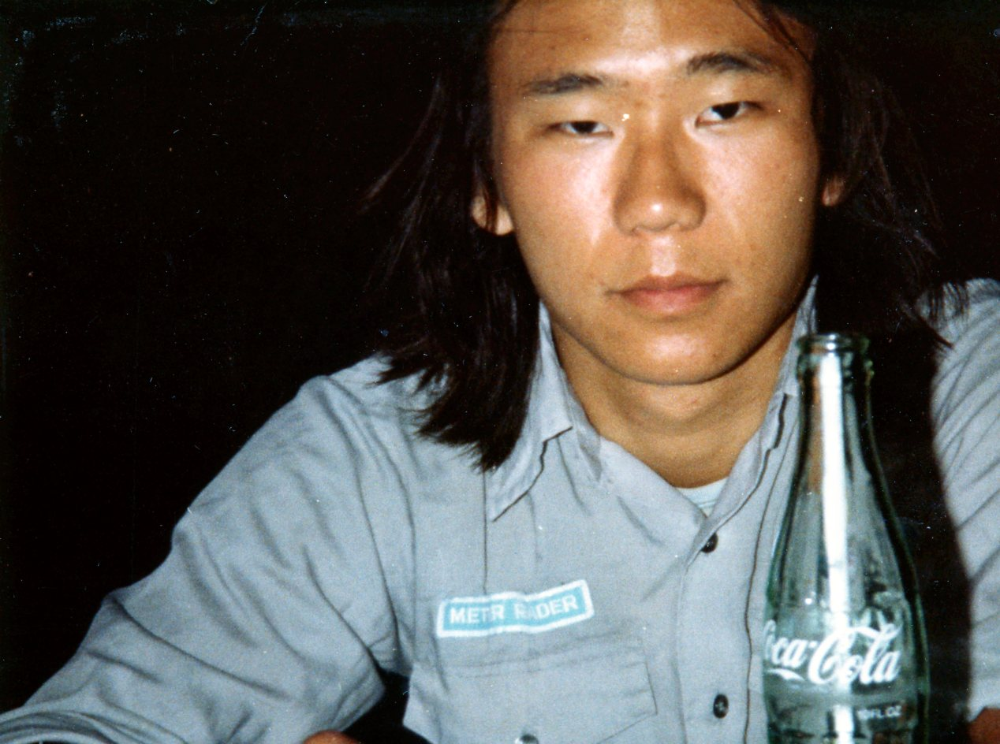
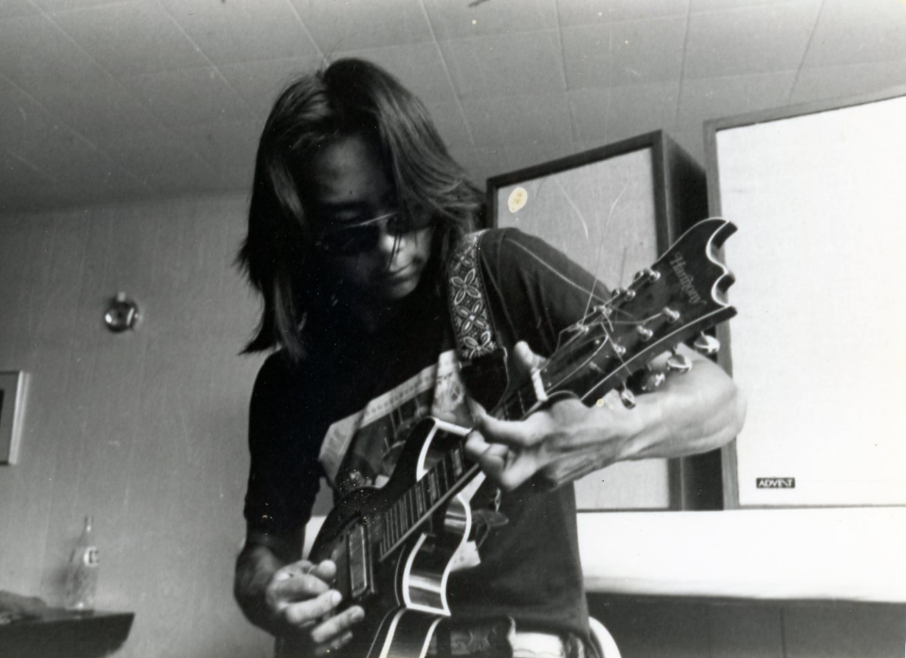
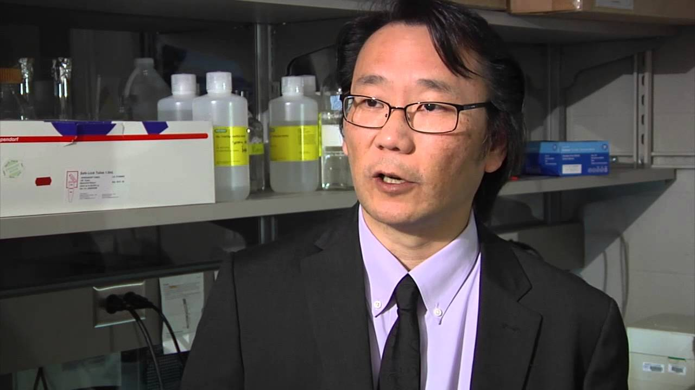

younger Eugene

guitar time

Dr.Kwon give an interview
Eugene Dai Kwon (relation: Father) is a second generation American who is half North Korean and half South Korean. Having grown up, the oldest of two siblings, his brother Danny 3 years younger, Eugene lived many places with his parents in his youth. As he aged he grew interested with being a soldier as the Korean war had uprooted his family, WW2 was not far in the past and Vietnam was occurring at the time, thus culture revolved around war. As he grew up Eugene become very interested in music and decided he wanted to be a rockstar, yes, a rockstar and thus started going to school at Grinnell College where he started off as a music major. After events forced him in another direction, Eugene started studying medicine and eventually became a surgeon. This was not something that was very predictable in Eugene’s life as he was not anticipating medical school on his horizon. A very stern discussion about the realities of life with his parents resulted in his sudden change of career. As time progressed, he did
significant work helping the field of immunology and has published over 150 scientific papers. Eugene started a family and has two children, me being one and my sister (Jenny) the other. Eugene’s wife, Pamela is one of the great things to befall Eugene in his life and he attributes many of his current good qualities to her existence in his life.